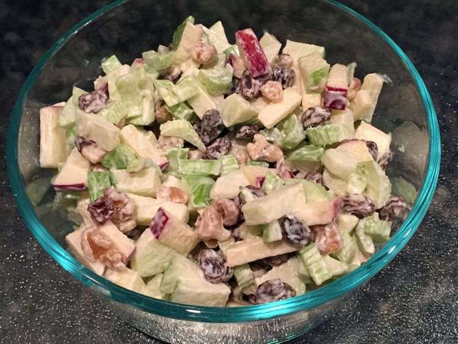

The Waldorf Salad

The Waldorf Salad is a fruit and nut salad named for the Waldorf-Astoria hotel, to whom it's creation is attributed.
There are many possible variations to the recipe but the basic salad contains apples, cellery, mayonaise,
and (typically) wallnuts.
The below recipe is from Allrecipes. Other popular modifications include adding chicken or substituting the mayo
for another dressing. Enjoy!
Ingredients
- ½ cup mayonnaise
- 1 tablespoon white sugar
- 1 teaspoon lemon juice
- ⅛ teaspoon salt
- 3 apples -- peeled, cored, and chopped
- 1 cup thinly sliced celery
- ½ cup chopped walnuts
- ½ cup raisins (Optional)
Steps
- Whisk together mayonnaise, sugar, lemon juice, and salt in a serving bowl.
- Stir in apples, celery, walnuts, and raisins. Cover and chill in the refrigerator until ready to serve.